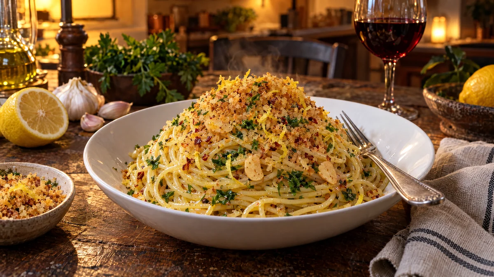

RESTFEST · RECEPTHuvudrätt
Pasta aglio e olio med citronpangrattato
Spagetti, vitlök, olivolja och en skiva gammalt bröd. Brödet rostas till gyllene, krispiga smulor med citronskal och chili och strös över blank, vitlöksdoftande pasta. Italiensk nattmat på 15 minuter.
- Förberedelse
- 5 min
- Tillagning
- 15 min
- Portioner
- 4
- Nivå
- Nybörjare
 Det här behöver du
Det här behöver du
JÄMFÖRT MED DIN KYL
Tryck på + vid det du behöver köpa.
Citronpangrattato
Pasta
Gör så här
- Riv brödet grovt eller mixa det till grova smulor.
- Stek smulorna i 2 msk olivolja i en stor stekpanna på medelvärme i 4–5 minuter. Rör ofta, tills de är gyllene och krispiga. Ta av från värmen, rör ner citronskal, chili och salt och lägg upp smulorna på en tallrik.
- Koka upp minst 4 liter vatten med salt. Koka spagettin 1 minut kortare än det står på förpackningen. Spara 2 dl av pastavattnet innan du häller av.
- Skiva vitlöken tunt medan pastan kokar. Lägg vitlöken och 1 dl olivolja i den kalla stekpannan och värm på låg till medelvärme i 3–4 minuter, tills vitlöken är ljust gyllene. Bränd vitlök blir bitter, så ta av pannan om den mörknar för snabbt. Rör ner chiliflakes de sista 30 sekunderna.
- Lägg den avrunna pastan i pannan med 1 dl av pastavattnet. Vänd kraftigt med en tång i 1–2 minuter, tills oljan och vattnet blir en blank, krämig sås som täcker pastan. Tillsätt mer pastavatten om det behövs.
- Vänd ner persilja och citronsaft och smaka av med salt.
Dekoration och servering
- Snurra pastan till höga nystan med en tång mot en slev och lägg ett i varje djup tallrik.
- Strö rikligt med pangrattato över precis före servering, så att smulorna håller sig krispiga.
- Avsluta med lite extra persilja, citronskal och några droppar olivolja.
- Ställ fram resten av smulorna i en skål, alla vill ha mer.
Mått och ugnstemperaturer
Måtten är svenska (dl, msk, tsk, krm). Ugnstemperaturerna gäller vanlig ugn med över- och undervärme; med varmluft, sänk med 20 grader.